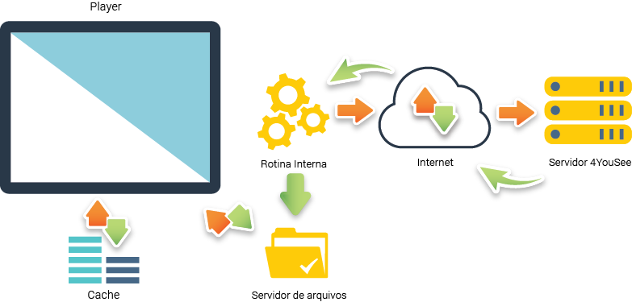

Desenvolvimento de Templates
Do funcionamento básico de um player até criação de um template
O que é o player 4YouSee?
O player 4YouSee foi criado para exibir conteúdos (imagens, vídeos e HTML5) nos mais diversos tipos de equipamentos/dispositivos. Ele precisa se conectar a internet para baixar os conteúdos, a partir desta conexão ele consegue funcionar mesmo offline.
Como funciona o player 4YouSee?
O que é um template?
No caso do 4YouSee, o template é um conteúdo feito em HTML5 para ser visualizado nos players. Ele pode ser dinamico ou estatico, pode conter noticias, efeitos e funcionalidades.
Como um template dinamico recebe os dados?
O template pode receber os dados de 2 maneiras:
-
Offline (Notícias - 4Yousee)
Neste caso o template não precisa se conectar a internet porque todos os dados necessarios já foram baixados pelas rotinas do player. -
Online (API, Iframe, URL - Internet)
Este é um caso especial onde o template recebe as informações da internet e só funcionará se o player estiver conectado.
Template de noticias
O player envia os dados para o template de noticias através de 2 parametros imgVar e txtVar. Em txtVar, geralmente você encontrará o objeto com todos os dados. Esses parametros são enviados por uma requisição do tipo GET.
imgVar=http://validacao.4yousee.com.br/common/imgnews/0.png&txtVar=cidade1%253DBelo+Horizonte%2526diaprevisao1%253D22%252F03%252F2018%2526diaprevisao2%253D23%252F03%252F2018%2526diaprevisao3%253D24%252F03%252F2018%2526diaprevisao4%253D25%252F03%252F2018%2526icone1%253D4r%2526icone2%253D4%2526icone3%253D4%2526icone4%253D2%2526iconoite1%253D4rn%2526iconoite2%253D4n%2526iconoite3%253D2n%2526iconoite4%253D2n%2526max1%253D28%25C2%25B0C%2526max2%253D28%25C2%25B0C%2526max3%253D30%25C2%25B0C%2526max4%253D29%25C2%25B0C%2526min1%253D20%25C2%25B0C%2526min2%253D19%25C2%25B0C%2526min3%253D18%25C2%25B0C%2526min4%253D16%25C2%25B0C%2526nomedia1%253DQuinta%2526nomedia2%253DSexta%2526nomedia3%253DS%25C3%25A1bado%2526nomedia4%253DDomingo%2526solnascente1%253D06h00%2526solnascente2%253D06h00%2526solnascente3%253D06h00%2526solnascente4%253D06h00%2526solpoente1%253D18h05%2526solpoente2%253D18h04%2526solpoente3%253D18h03%2526solpoente4%253D18h02
Vamos criar um template?
Para criar um template é necessario conhecimento em HTML5, CSS e JavaScript. Nesta aula iremos criar um template do clima tempo que exiba uma imagem de fundo diferente para cada tipo de previsão.